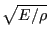
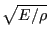

Next: Heat transfer Up: Types of analysis Previous: Steady state dynamics Contents
In a direct integration dynamic analysis, activated by the
*DYNAMIC key word, the equation of motion is integrated in
time using the  -method developed by Hilber, Hughes and Taylor
[56]. The method is implemented exactly as described in
[19]. The parameter
-method developed by Hilber, Hughes and Taylor
[56]. The method is implemented exactly as described in
[19]. The parameter  lies in the interval [-1/3,0] and controls the high frequency dissipation:
lies in the interval [-1/3,0] and controls the high frequency dissipation:  =0 corresponds to the classical Newmark method inducing no dissipation at all, while
=0 corresponds to the classical Newmark method inducing no dissipation at all, while  =-1/3 corresponds to maximum dissipation. The user can choose between an implicit and explicit version of the algorithm. The implicit version (default) is unconditionally stable.
=-1/3 corresponds to maximum dissipation. The user can choose between an implicit and explicit version of the algorithm. The implicit version (default) is unconditionally stable.
In the explicit version, triggered by the parameter EXPLICIT in the *DYNAMIC
keyword card, the mass matrix is lumped, and a forward integration scheme is
used so that the solution can be calculated without solving a system of
equations. Each iteration is much faster than with the implicit
scheme. However, the explicit scheme is only conditionally stable: the maximum
time step size is proportional to the time a mechanical wave needs to cross
the smallest element in the mesh. For linear elements the proportionality
factor is 1., for quadratic elements it is
 . For example, for
elastic materials, the wave speed in a rod is
, where E is
Young's modulus and
. For example, for
elastic materials, the wave speed in a rod is
, where E is
Young's modulus and  is the material density.
is the material density.
To accelerate explicit dynamic calculations mass scaling can be used [63]. It was introduced in CalculiX in the course of a Master Thesis [18]. Mass scaling is triggered by specifying the minimum time increment which the user wants to allow underneath the *DYNAMIC keyword (third parameter). If for any element the increment size calculated by CalculiX (based on the wave speed) is less than the minimum, the mass of this element is automatically scaled and redistributed such that the total mass of the element does not change. This is obtained by moving mass from the off-diagonal positions of the element mass matrix onto the diagonal. If any mass scaling takes place, a message is printed and the elements for which the mass was redistributed are stored in file “WarnElementMassScaled.nam”. This file can be read in any active cgx-session by typing “read WarnElementMassScaled.nam inp” and the elements can be appropriately visualized. Without a minimum time increment no mass scaling is applied.
The following damping options are available: